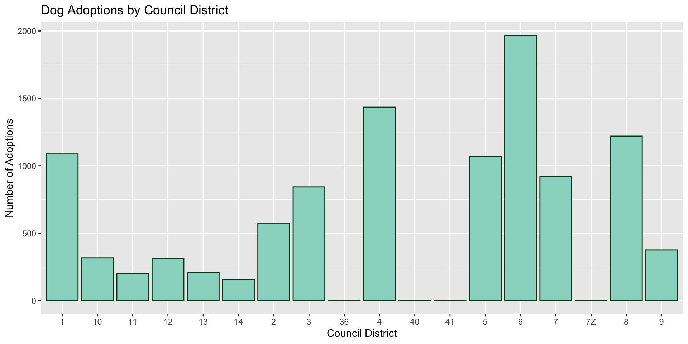
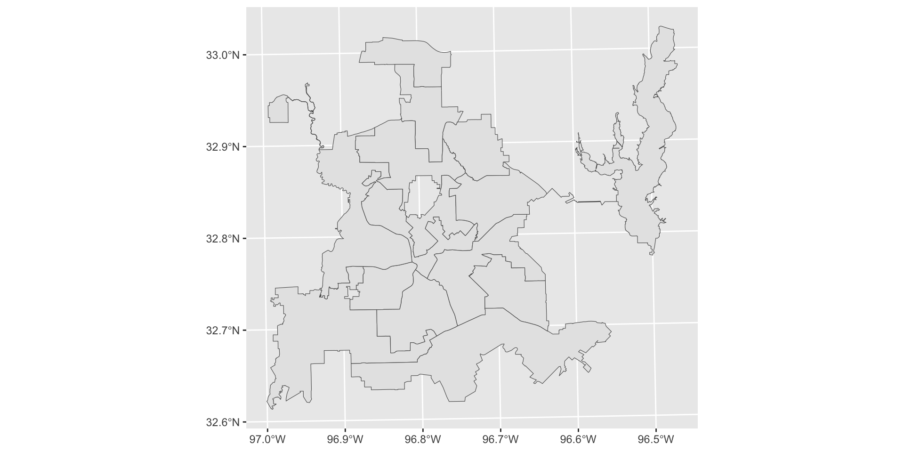
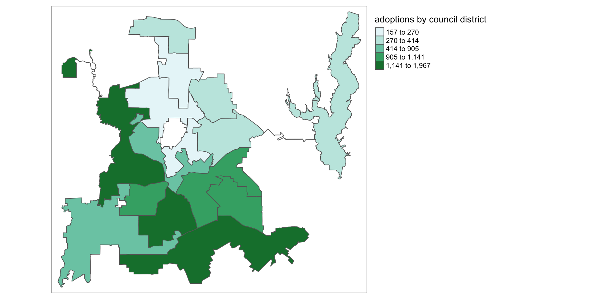
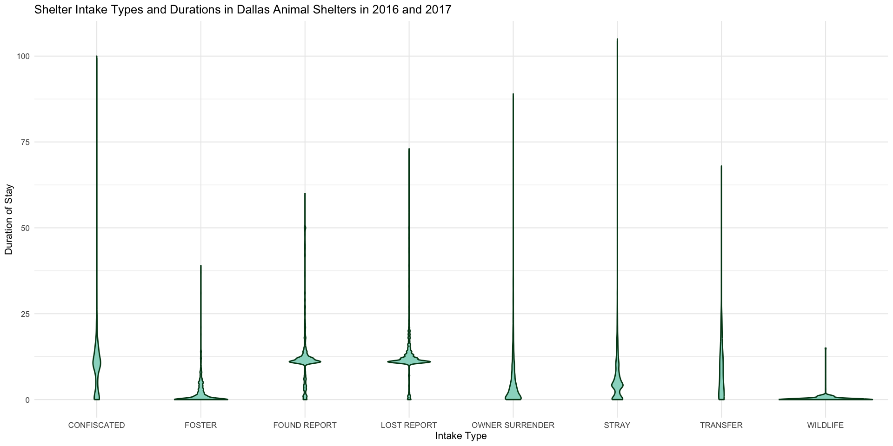
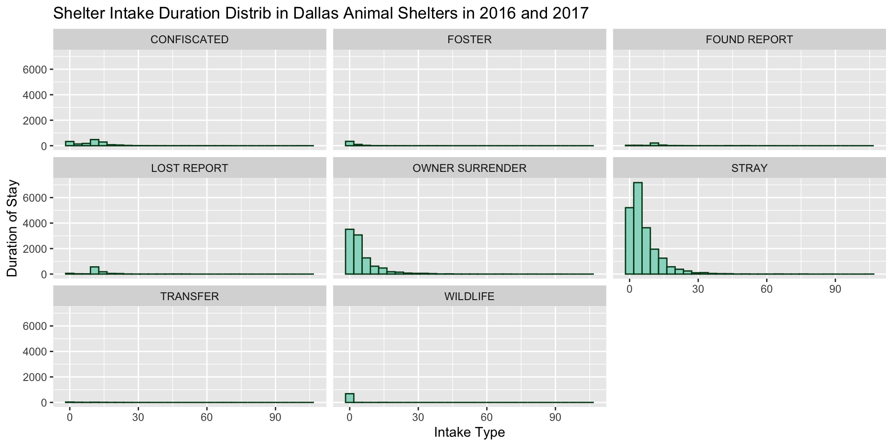

The Real House Pets of Dallas
Jefferson Ratliff, Evi Jonas, Sydney Stitt, Dashiell Ward
Example of a Dog in Dallas:
Other Wildlife (Not Dallas Specific):
Our Opening Spiel:
Data
34,819 observations across 13 variables
Data collected by the multiple Dallas shelters in 2016 and 2017
We set out to cultivate a clearer understanding of who adopts, and who gets adopted. This was achieved by examining two key questions, those being:
Which city council districts have the highest rate of adoption?
What types of animal intake tend to stay longer in shelters?
Q1, Dallas Adopters Club:
We used the variables council_district and outcome_type
- isolated to allow for each district to be measured against the number of animals taken into shelters whose case was resolved in adoption.
With a clearer picture of where adoption rates are highest, resources supporting shelter operations may be more effectively allocated
- Could improve outcomes for prospective adopters and the adoptees they might hope to take in.
Dallas Adopters Club (Cont’):
Here is what we found:
Dallas Adopters Club (Cont’) (Cont’):
Adoption rates proved to be highly variable across council districts
Top adopting districts include 1, 4, 6, and 8
Lowest rates of adopting districts include 10-14
Geography may play a major role in pet adoption in the City of Dallas.
Dallas Adopters Club (Cont’) (Cont’) (Cont’):
Reading layer `Councils' from data source
`/Users/aallorant/Desktop/project01/project01-dog/data/Councils/Councils.shp'
using driver `ESRI Shapefile'
Simple feature collection with 14 features and 6 fields
Geometry type: POLYGON
Dimension: XY
Bounding box: xmin: 2430146 ymin: 6909399 xmax: 2592859 ymax: 7061339
Projected CRS: NAD83 / Texas North Central (ftUS)
Dallas Adopters Club (Cont’) (Cont’) (Cont’) (Cont’):

Q2, Those that Linger:
We weighed the manner of intake which animals underwent against the duration of their stay in a shelter.
Constructing a measurement from the intake date to the outtake date (dog_duration)
Charting it against intake_type.
We then generated two visualizations from which to glean trends.
Those that Linger (Cont’):
#Making a duration variable using dplyr
dog_duration <- dog %>%
mutate(intake_date = mdy(intake_date),
outcome_date = mdy(outcome_date)) %>%
mutate(duration = difftime(outcome_date, intake_date, units = "days")) %>%
mutate(duration = as.vector(duration))
dog_duration_summary <- dog_duration %>%
group_by(intake_type) %>%
summarize(average_duration = mean(duration, na.rm = TRUE),
sd_duration = sd(duration, na.rm = TRUE),
count_types = n())
print(dog_duration_summary)# A tibble: 8 × 4
intake_type average_duration sd_duration count_types
<chr> <dbl> <dbl> <int>
1 CONFISCATED 9.94 8.26 1633
2 FOSTER 1.86 3.95 492
3 FOUND REPORT 12.4 9.21 420
4 LOST REPORT 12.7 7.09 990
5 OWNER SURRENDER 5.21 7.01 9612
6 STRAY 6.36 7.00 20890
7 TRANSFER 8.08 9.92 88
8 WILDLIFE 0.282 1.34 694Those that Linger (Cont’) (Cont’):

Those that Linger (Cont’) (Cont’) (Cont’):

Those that Linger (Cont’) (Cont’) (Cont’) (Cont’):
Owner Surrender and Stray were the two most common forms of intake.
Intake via Foster, Wildlife, Owner Surrender, and Stray correlated with the briefest tenures in shelter care
- Half of wildlife intakes end up euthanized, may explain their shorter stays (339/694, or 49%).
Found and Lost Report correlating with lengthier stays
- Contacting owners for lost and found animals can be a lengthy process
Thank you for Listening
Now go out and adopt an animal, volunteer at a shelter, or just gift Adrien a shelter dog